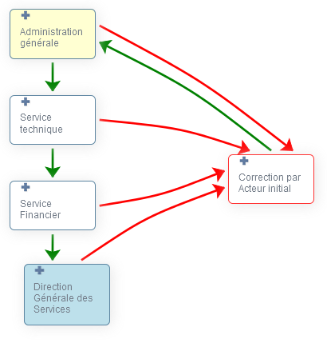
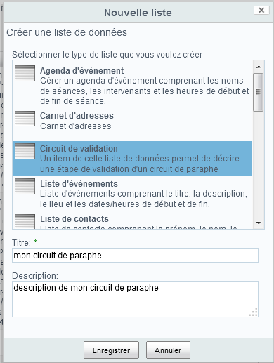
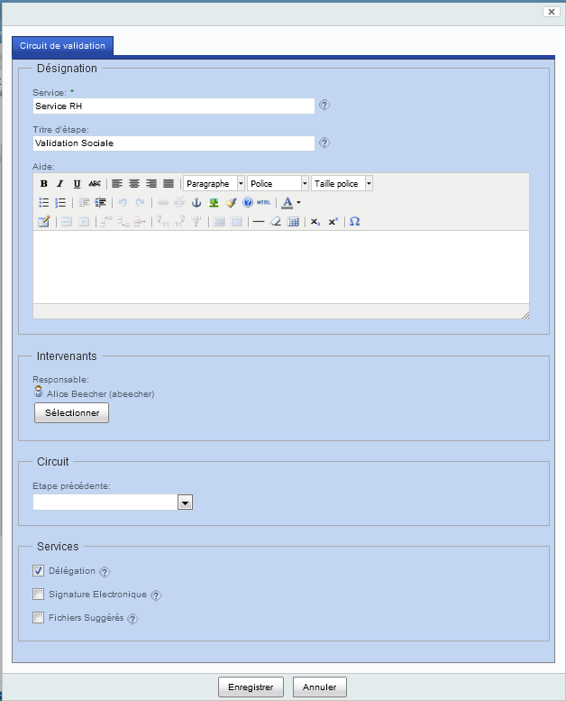
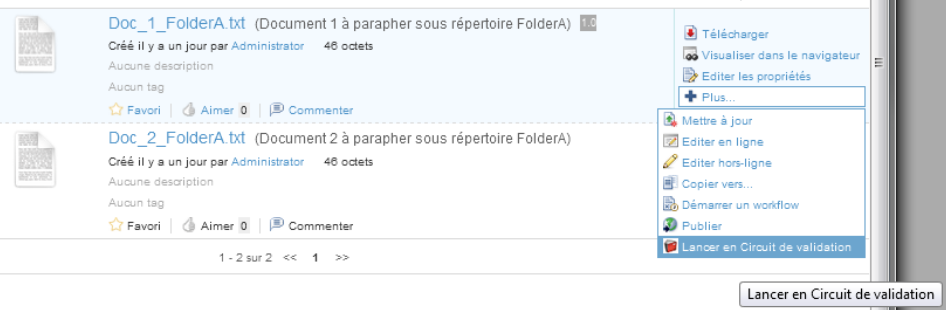
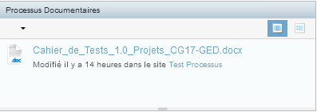

Présentation Générale¶
Introduction¶
Blue Parapheur est un parapheur électronique open source déployable sur l'environnement Alfresco de gestion électronique de document.
Ce 'Guide d'Utilisation de Blue Parapheur' décrit la création et le déploiement de circuit de paraphe de documents par des fonctionnels métier et l'exécution des ces circuits par des utilisateurs finaux.
Blue Parapheur s'appuie sur Alfresco et sur l'extension Alfresco Blue Processus qui permet la modélisation graphique de processus documentaires.
Un circuit de paraphe est composé d'une succession d'étapes de paraphe d'un document (à l'image d'un signataire qui passe de service en service) : une étape de paraphe est réalisée par une personne ou un groupe de personnes (par exermple, un directeur de service ou un comité scientifique) et consiste à indiquer
-
son approbation (dans ce cas, le circuit passe à l'étape suivant s'il y en a une),
-
sa désapprobation (dans ce cas, l'initiateur se voit proposer de corriger/compléter/améliorer/... le document).
L'approbation peut être accompagnée d'un signature électronique intégrée au document.

Pourquoi Alfresco ?¶
Alfreso est un environnement de gestion électronique de documents ("GED"). Ce type d'environnement se compose de 5 outils principaux:
- un gestionnaire de documents pour les créer, éditer, supprimer, visualiser en collaboration concurrente,
- un moteur d'indexation de documents pour les retrouver,
- un moteur de tâches pour gérer les cycle de vie des documents,
- un portail d'accès aux documents,
- des interfaces ouvertes dont le standard CMIS (le "SQL" de la gestion documentaire).
Un parapheur électronique doit permettre de transmettre un ou des documents à des responsables pour diffusion ou approbation. Cette transmission doit être trâcée, ré-aiguillée si besoin, validée officiellement si besoin, déléguée ou assistée.
Outre le fait qu'il s'agit de document et de cycle de vie de documents, toutes ses opérations bénéficie des services ouverts d'un environnement de GED comme Alfresco et peuvent s'appuyer efficacement sur ses 5 outils principaux sans avoir à ré-inventer la roue.
Structure du guide¶
Ce guide d'utilisation de Blue Parapheur est divisé en 3 chapitres :
-
Le chapitre 'Présentation Générale' décrit les objectifs de Blue Parapheur et la structure de ce guide d'utilisation,
-
Le chapitre 'Mise en œuvre' décrit le développement et la mise à disposition des circuites de paraphe par les gestionnaires de site,
-
Le chapitre 'Utilisation' décrit l'utilisation des circuits de paraphe par les utilisateurs finaux,
-
Le chapitre 'Configuration' décrit les configurations possibles des circuits de paraphe.
Mise en œuvre¶
Introduction & Prérequis¶
Blue Parapheur met à disposition des utilisateurs des circuits de paraphe.
Pour définir ces circuits de paraphe, les gestionnaires de site ont simplement à créer une liste de données.
A la suite de cette création, Blue Parapheur génère un processus de Blue Processus qui est mis à disposition des utilisateurs finaux.
Le seul prérequis est donc que l'application 'Blue Processus' ait été installée préalablement.
Initialisation d'un circuit de paraphe¶
La création d'un circuit de paraphe s'appuie sur la création, par un gestionnaire de site, d'une liste de données 'Circuit de validation'
-
dans un site Share si vous souhaitez que le circuit de paraphe ne soit applicable que pour les documents de ce site,
-
dans le site 'Processus Documentaire Blue Processus' si vous souhaitez que le circuit de paraphe soit applicable à tous les documents des sites Share.
Les étapes de création sont:
-
Dans le site choisi, cliquer sur l'onglet 'Listes de données'
-
Cliquer sur le bouton 'Nouvelle Liste'
-
Dans le formulaire qui s'affiche,
-
sélectionner 'Circuit de validation'
-
entrer pour nom 'mon circuit de paraphe**'
-
Cliquer sur 'Enregistrer'
-

-
La liste de données est créée; cliquer sur 'Nouvel élément'
-
Dans le formulaire qui s'affiche, créer la première étape du circuit de paraphe. Par exemple, en entrant:
-
Service : Service RH
-
Titre d'étape : Validation Sociale
-
Aide : Texte d'aide affiché aux personnes à qui cette étape de paraphe sera soumise. Par exemple, vous pouvez indiquer :
-
**Ce document vous est transmis pour approbation. Il vous suffit de cliquer sur le bouton 'Approuver' si vous pensez que ce document est correct d'un point de vue social. Toutefois si ce document ne vous convient pas, indiquer dans le champ 'commentaire' vos remarques et cliquer sur le bouton 'Refuser' pour transmettre en retour au rédacteur s'il est nécessaire de lui apporter des modifications importantes de fond. Si vous pensez que ce document ne nécessite pas d'approbation par exemple, utiliser le bouton 'Abandonner' pour interrompre le circuit de validation. Si vous souhaitez un avis complémentaire, utilisez l'onglet 'Demande d'avis'.**
* **Responsable** : Sélectionner le responsable RH * **Délégation** : décocher si vous n'autorisez pas la délégation pour le responsable RH * **Signature électronique** : cocher si une signature électronique est requise pour ce paraphe * **Fichiers suggérés** : cocher si vous autorisez les intervenants à télécharger des documents de suggestion pour cette étape * cliquer sur '**Enregistrer**'

-
La première étape du circuit de paraphe est créé; cliquer sur 'Nouvel élément'
-
Dans le formulaire qui s'affiche, créer la seconde étape du circuit de paraphe. Par exemple, en entrant:
-
Service : Service Technique
-
Titre d'étape : Validation Technique
-
Responsable : Sélectionner le responsable du service
-
Etape précédente : Sélectionner l'élément 'Service RH' de la liste
-
Délégation : décocher si vous n'autorisez pas la délégation pour le responsable du service
-
Signature électronique : cocher si une signature électronique est requise pour ce paraphe
-
Fichiers suggérés : cocher si vous autorisez les intervenants à télécharger des documents de suggestion pour cette étape
-
cliquer sur 'Enregistrer'
-
-
Renouveller l'opération précédente pour les services suivants que vous voulez intégrer au circuit de paraphe
-
Cliquer sur l'icône d'édition de la liste de données (icône crayon à droite du nom de la liste de données 'mon circuit de paraphe').
-
Dans le formulaire d'activation qui s'affiche, enter :
-
Titre : change le titre du circuit si vous le souhaitez
-
Description : change la description du circuit si vous le souhaitez
-
Garder les permissions : cocher la case si vous souhaitez que les permissions sur le document avant le lancement du circuit soient rétablies à la fin du circuit
-
Type autorisé : entrer un type de documents pour lequel ce circuit est disponible; par exemple, 'cm:content' pour limiter le circuit au fichier. Si vous n'entrer rien, le circuit ets pour tous types de document (fichier et répertoire).
-
cliquer sur 'Enregistrer'
-
-
Cliquer sur l'icône de génération du circuit de validation (icône lien vert à droite du nom de la liste de données 'mon circuit de paraphe').
-
Le circuit est généré et la fenêtre qui s'affiche montre les enchainements entre les différentes étapes du circuit.
Votre circuit de paraphe est créée.
Note : le circuit est créé comme un processus de Blue Processus. Vous pouvez donc utiliser l'interface graphique de Blue Processus pour le paramétrer plus finement. Se Reporter à la documentation de Blue processus si vous souhaitez plus d'information sur la conception graphique de processus.
Edition d'un circuit de paraphe¶
L'édition d'un circuit de paraphe se fait, par un gestionnaire de site, sur la liste de données 'Circuit de paraphe'
Les étapes d'édition sont:
-
Dans le site choisi, cliquer sur l'onglet 'Listes de données'
-
Cliquer sur le nom de la liste 'Circuit de paraphe'
-
La liste de données est affichée;
-
Cliquer sur 'Nouvel élément' pour ajouter une étape au circuit,
-
à la droite d'une étape, Cliquer sur l'icône d'édition pour changer les propriétés d'une étape,
-
à la droite d'une étape, Cliquer sur l'icône de duplication pour créer une nouvelle étape à partir de l'étape courante (permet de conserver des valeurs comme la description, les cases à cocher, ...),
-
à la droite d'une étape, Cliquer sur l'icône de suppression pour supprimer une étape.
-
Note :
Les circuits en cours sont directement impactés par les changements si ces changements interviennent sur des étapes qui n'ont pas encore été passées par ces circuits. Dans le cas d'ajout ou de suppression d'étape, l'ancien circuit est conservé mais déplacé dans un espace d'archive pour que les circuits en cours ne soient pas impactés par cet ajout ou cette suppression. Les circuits de l'espace archive sont régulièrement supprimés dès qu'ils n'ont plus de circuits actifs.
Pour chaque circuit passé, un document de suivi des approbations est généré ainsi qu'un document de suivi de toutes les actions. Ces documents sont conservés avec les données d'historisation du circuit et peuvent-être fournis sur demande par les administrateurs de l'application.
Utilisation¶
Introduction¶
Cette partie décrit les étapes d'utilisation d'un circuit de paraphe par les utilisateurs finaux.
Ainsi :
-
un rédacteur va pouvoir soumettre un fichier ou un dossier à validation,
-
un chef de service/département/direction ou un président va pouvoir valider (parapher) le document avec éventuellement intégration de sa signature électronique.
Exécution d'un circuit de paraphe¶
Un circuit de paraphe activé est immédiatement disponible pour les documents du type si un 'type autorisé' a été défini sur le circuit ou pour tous les documents si aucun type n'a été défini.
Considérons le circuit de paraphe suivant :
Service RH sans signature électronique -> Service Technique avec signature électronique
Les étapes d'exécution d'un circuit de paraphe sont:
-
Dans le site choisi, cliquer sur l'onglet 'Espace Documentaire'
-
Sur un fichier à parapher 'monFichier.docx', sélectionner l'action 'Lancer en circuit de validation'

Note: si plusieurs circuits de paraphe ont été créés, un formulaire est proposé pour sélectionné pour sélectionner le circuit à lancer.
- Le circuit de paraphe est lancé : le premier intervenant 'Responsable RH' reçoit un email lui indiquant qu'il a un paraphe sur un document Le contenu par défaut de cet email est de la forme (ce contenu est paramétrable - voir le guide utilisateur de Blue Processus) :
Bonjour,
Une tâche vous a été assignée sur le document
monFichier.docxpar prenom nom (email) sur l'application 'Blue Processus'.Merci de procéder au plus vite à sa bonne résolution.
Vous pouvez y accéder grâce au lien suivant 'http://
: /share/page/site/testparaphe/document-details?nodeRef=workspace://SpacesStore/ebf6d045-0a12-4f73-b0e8-7f7c1323646c'. Ce lien vous donne accès à la prévisualisation du document à traiter et à la commande 'Réaliser ma tâche documentaire'. Cordialement,
Les administrateurs Blue Processus http://
: /share>
-
Se connecter sous le compte du 'Responsable RH'
-
Dans la dashlet 'Processus documentaires', cliquer sur le document en paraphe
